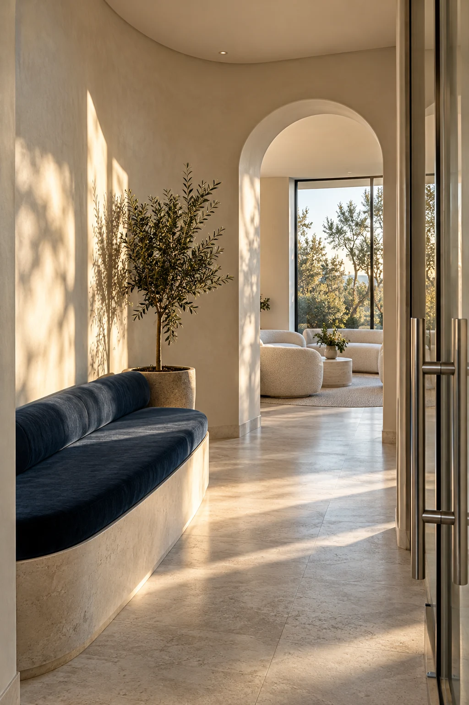

01
Your first visit
Questions about where to begin, what to expect or how to prepare.
Questions about where to begin, what to expect or how to prepare.
A starting point for a conversation about the services that interest you.
Ask about practical arrangements or share what would make a visit easier.

03 / Before we connect
A few practical details about getting started.
You can use the form to explore a general question about the clinic experience or services. Please avoid entering medical records or sensitive health details.
Make a short list of what you would like to understand. You can also share any preferences or practical needs when arranging a visit.
This is a frontend website preview. No appointment is reserved and no enquiry is delivered. Live booking and contact details need to be connected before launch.
Yes. You can ask about how a visit is organised, how to request a pause and what arrangements might help you feel at ease.